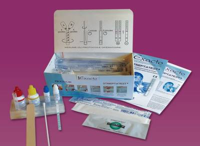

В июне 2010 г. в России зарегистрирован экспресс-тест (Streptatest, компания Laboratoires Dectra Pharm & Sbh) для диагностики тонзиллофарингита, вызванного БГСА. Данный экспресс-тест, обладающий высокой специфичностью (95,3%) и чувствительностью (97,3%), позволяет получить результат через 5-10 мин., избежать ошибок при определении этиологии тонзиллофарингита, сократить количество необоснованных назначений антибиотиков и, в случае положительного результата, сразу назначить антибактериальную терапию.
Среди 18 видов и 8 родственных групп бактерий, причисленных к важнейшим патогенам человека, особую роль играют стрептококки. По медицинской значимости они занимают второе место после стафилококков. Из числа стрептококков, патогенных для человека, с середины 80-х гг. ХХ столетия во многих странах мира наблюдается рост заболеваемости, обусловленной β-гемолитическими стрептококками группы А (БГСА, S. pyogenes).
β-гемолитический стрептококк группы А (пиогенный стрептококк, БГСА S. pyogenes) — грамположительный, неспорообразующий, неподвижный микроорганизм. Встречается повсеместно, часто колонизирует кожные покровы и слизистые оболочки человека. Главными путями передачи являются воздушно-капельный, контактный и пищевой. БГСА вызывают поверхностные (ангины, фарингит, импетиго, рожа), инвазивные (некротизирующий фасциит, миозит, менингит, эндокардит, пневмония, послеродовой сепсис) и токсин-опосредованные инфекции (скарлатина, синдром токсического шока). Со стрептококковой инфекцией связано также возникновение неврологических расстройств у детей, проявляющихся обсессивно-компульсивными расстройствами (PANDAS-синдром).
Диагностика стрептококковых инфекций, в частности наиболее распространённого заболевания тонзиллофарингита (или ангины) включает микробиологическое исследование мазка с поверхности миндалин и/или задней стенки глотки.
До недавнего времени в России не использовались широко распространённые за рубежом методы экспресс-диагностики, основанные на прямом выявлении стрептококкового антигена в мазках с поверхности миндалин и/или задней стенки глотки. Во многих странах Европы использование экспресс-теста на амбулаторном приёме является рутинным методом диагностики. Эти современные тестовые системы, основанные на иммунохроматографическом методе, позволяют получать результат через 5-10 мин. с высокой специфичностью (95-100%) и чувствительностью (70-95%). Использование экспресс-тестов позволяет избежать ошибок при определении этиологии тонзиллофарингита, сократить количество необоснованных назначений антибиотиков и, в случае положительного результата, сразу назначить антибактериальную терапию.

В июне 2010 г. в России зарегистрирован экспресс-тест (Streptatest, компания Laboratoires Dectra Pharm & Sbh) для диагностики тонзиллофарингита, вызванного БГСА (регистрационное удостоверение№ ФСЗ 2010/07266 от 24 июня 2010 г.). Официальным импортёром Streptatest на территории России является ООО «Сатиус».
По итогам второго многоцентрового исследования (ноябрь 2000 г. — февраль 2001 г., n=525) в рамках процесса регистрации теста в FDA и получения отметки CLIA (Поправка к закону, направленная на улучшение качества работы лабораторной службы), Streptatest продемонстрировал чувствительность 97,3% и специфичность 95,3%.